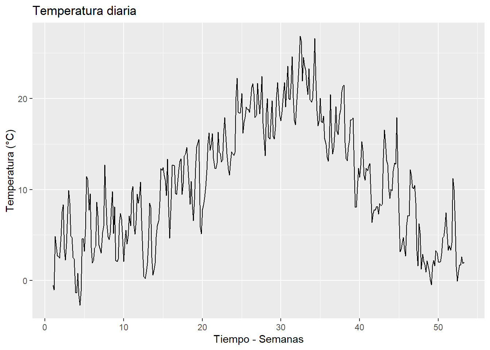
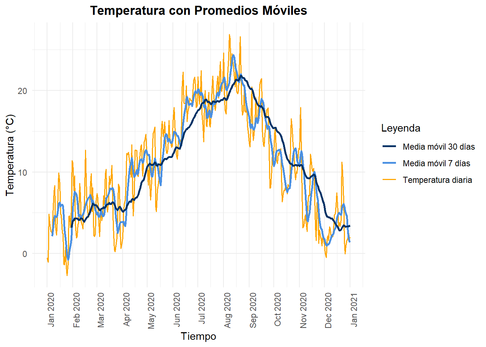
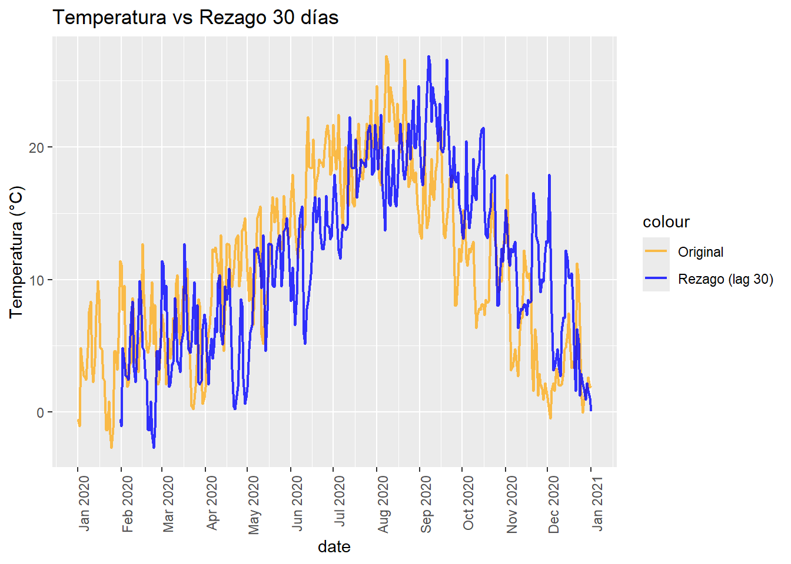
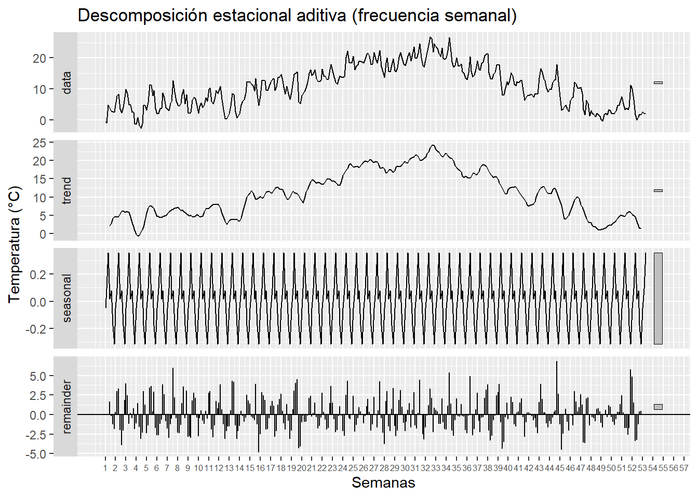

Chapter 3 Analisis de series
| Componente | Qué muestra |
|---|---|
| Serie original | Evolución completa con ruido |
| Promedio móvil | Suaviza la serie y revela la tendencia anual |
| Rezago | Muestra dependencia temporal (temperatura de hoy depende de la de ayer) |
| Estacionalidad | Patrón repetitivo semanal en el clima |
3.1 Serie original (diaria)
# Promediar por día (en caso de que haya datos horarios)
daily <- df %>%
group_by(date) %>%
summarise(T = mean(T, na.rm = TRUE))
# Convertir a serie temporal (frecuencia diaria)
ts_T <- ts(daily$T, frequency = 7) # 7 para capturar estacionalidad semanal# Gráfico de la serie original
autoplot(ts_T) +
ggtitle("Temperatura diaria") +
xlab("Tiempo - Semanas") + ylab("Temperatura (°C)")
3.2 Promedio móvil (Media Móvil 7 días)
# Promedios móviles
daily$MA7 <- rollmean(daily$T, k = 7, fill = NA, align = "right")
daily$MA30 <- rollmean(daily$T, k = 30, fill = NA, align = "right")ggplot(daily, aes(x = date)) +
geom_line(aes(y = T, color = "Temperatura diaria"), size = 0.6) +
geom_line(aes(y = MA7, color = "Media móvil 7 días"), size = 1) +
geom_line(aes(y = MA30, color = "Media móvil 30 días"), size = 1) +
labs(
title = "Temperatura con Promedios Móviles",
x = "Tiempo",
y = "Temperatura (°C)",
color = "Leyenda"
) +
scale_color_manual(
values = c(
"Temperatura diaria" = "orange",
"Media móvil 7 días" = "#4A90E2",
"Media móvil 30 días" = "#003366"
)
) +
scale_x_date(
date_breaks = "1 month",
date_labels = "%b %Y"
) +
theme_minimal() +
theme(
axis.text.x = element_text(angle = 90, hjust = 1), # rotar etiquetas de fechas para mejor lectura
plot.title = element_text(hjust = 0.5, face = "bold") # centrar título y negrita
)## Warning: Using `size` aesthetic for lines was deprecated in ggplot2 3.4.0.
## ℹ Please use `linewidth` instead.
## This warning is displayed once every 8 hours.
## Call `lifecycle::last_lifecycle_warnings()` to see where this warning was
## generated.## Warning: Removed 6 rows containing missing values or values outside the scale range
## (`geom_line()`).## Warning: Removed 29 rows containing missing values or values outside the scale range
## (`geom_line()`).
| Serie | Qué muestra |
|---|---|
| T (original) | fluctuaciones reales día a día (ruido) |
| MA7 | tendencia suave a corto plazo, reduce variabilidad semanal |
| MA30 | tendencia general del clima, eliminando ruido de corto plazo |
Con el promedio móvil se observa que la serie de temperatura presenta fluctuaciones diarias importantes, pero mantiene una tendencia más clara cuando se suaviza con ventanas móviles de 7 y 30 días. La MA7 revela variaciones semanales, mientras que la MA30 permite ver la tendencia de fondo eliminando gran parte del ruido diario, facilitando la detección de ciclos y patrones a mayor escala.
3.3 Rezagos (Lag 30 días)
daily$T_lag1 <- lag(daily$T, 30)
ggplot(daily, aes(x = date)) +
geom_line(aes(y = T, color = "Original"), alpha = 0.7, size = 0.8) +
geom_line(aes(y = T_lag1, color = "Rezago (lag 30)"), alpha = 0.8, size = 0.8) +
ggtitle("Temperatura vs Rezago 30 días") +
ylab("Temperatura (°C)") +
scale_color_manual(values = c("Original" = "orange", "Rezago (lag 30)" = "blue")) +
scale_x_date(date_breaks = "1 months", date_labels = "%b %Y") +
theme(axis.text.x = element_text(angle = 90, hjust = 1))## Warning: Removed 30 rows containing missing values or values outside the scale range
## (`geom_line()`).
La línea naranja representa los valores reales de temperatura día a día, mientras que la línea azul muestra la misma serie desplazada 30 días, es decir, con un rezago de un mes. Ambas curvas presentan un patrón estacional claro, con incrementos en verano y descensos en invierno. La similitud entre la serie original y su rezago confirma una fuerte dependencia temporal a 30 días, evidenciando autocorrelación en los datos. Este comportamiento indica que la temperatura sigue un patrón continuo y predecible a lo largo del tiempo, lo que es fundamental para entender su dinámica.
3.4 Descomposición estacional
autoplot(descomp) +
labs(
title = "Descomposición estacional aditiva (frecuencia semanal)",
x = "Semanas",
y = "Temperatura (°C)"
) +
scale_x_continuous(
breaks = seq(1, length(ts_T), by = 1), # cada semana
labels = seq(1, length(ts_T), by = 1) # etiquetas semanales
) +
theme(
axis.text.x = element_text(size = 6) # tamaño más pequeño
)## Scale for x is already present.
## Adding another scale for x, which will replace the existing scale.
data → la serie original
trend → la tendencia a largo plazo
seasonal → los patrones que se repiten (por ejemplo, cada año o cada mes)
remainder → el ruido o variación aleatoria
La serie presenta un patrón estacional claro: las temperaturas aumentan progresivamente hacia los meses de verano y disminuyen en invierno, reflejando una tendencia anual marcada. La descomposición estacional aditiva permite separar tres componentes principales: la tendencia, que captura el aumento y disminución de la temperatura a lo largo del año; la estacionalidad, que refleja la repetición cíclica de estos comportamientos cada año; y el residuo, que presenta fluctuaciones pequeñas y sin patrón definido, indicando que la tendencia y la estacionalidad explican la mayor parte de la dinámica de la serie.